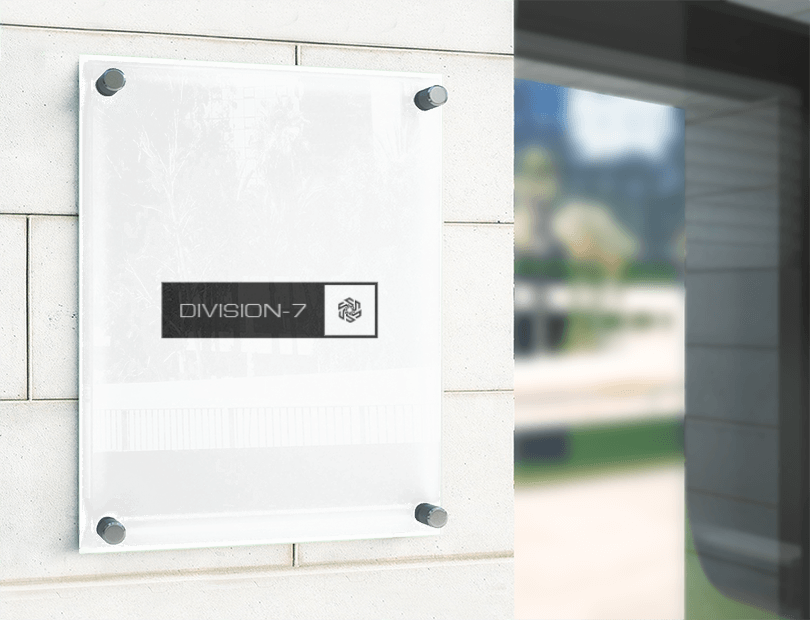

|
La technologie sur laquelle se base Division-7 est conçue par des experts en télécommunications et en renseignement qui, placés à l'avant-garde de leur domaine, s'efforcent de suivre le rythme de l'évolution constante du cybermonde. |
Toute entreprise sera la cible d'une attaque de sécurité dans le cloud à un moment ou à un autre de son existence - et de façon plus réaliste, de façon occasionnelle. Alors que le cloud offre d'énormes avantages et bénéfices potentiels, les entreprises négligent souvent l'aspect sécurité de ces environnements réactifs. La planification, la mise en œuvre et la surveillance d'un programme de sécurité du cloud sont des investissements obligatoires pour les organisations de toutes tailles. Découvrez comment transformer ces lacunes en avantages stratégiques |
 |
Aucun projet n'est trop dur, car mes amis ils assurent (R.) |
L'équipe de la Division-7 a parfaitement compris les enjeux de notre dernière mission(Machiavel) |
Grâce à la Division-7, nous avons enfin pu mettre hors d'état de nuire James, nous pourrons dominer le monde sous peu !(Dr. No) |
Si vous souhaitez nous parler de vos projets, avoir des astuces, ou juste poser une question contactez nous sur contact@division-7
|  |
Division-7 est un site fictif à vocation éducative, établie dans le cadre d'une action pour l'éducation numérique